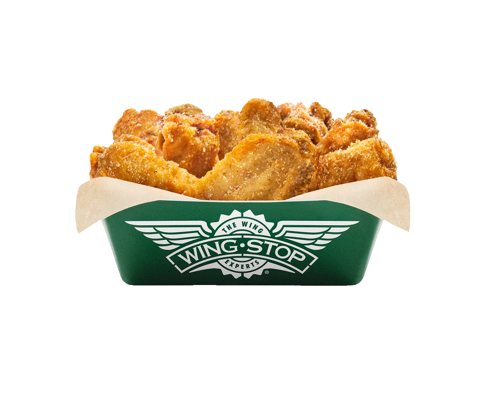

ORDERING GUIDE
Wingstop Gluten-Free Guide: What to Know Before Ordering
“Unbreaded” and “safe for celiac disease” are not the same claim. Wingstop identifies classic wings as unbreaded, but shared fryers, sauces, utensils and preparation areas can still create cross-contact.
What Matters
- Classic wings are unbreaded.
- Boneless wings and tenders contain wheat.
- Sauces can change the allergen profile.
- Shared oil and utensils matter.
Ingredient Formulation Is Only Half the Answer
A product can contain no gluten ingredient in its standard recipe and still be unsuitable for someone who cannot accept cross-contact. Wingstop prepares breaded boneless wings and tenders in the same restaurant system as classic wings. The ingredient list answers what belongs in the recipe; the kitchen process answers what else may touch the food before it reaches the box.
That distinction is why a short third-party “gluten-free menu” can be misleading. It may place a green label beside classic wings and fries without explaining shared oil, toss bowls, tongs or counters. A preference-based diner may accept those conditions. Someone with celiac disease or a wheat allergy may not. Both need a description of the process rather than a universal yes or no.
Wingstop's official allergen declaration says cross-contamination cannot be guaranteed against. That warning should control the decision whenever an old screenshot or unofficial menu appears more confident. Local product descriptions help with formulation details, but the corporate warning explains the system-level limitation that affects every order.

Classic Wings, Boneless Wings, Tenders and Sandwiches
Classic wings are bone-in and unbreaded. Their lack of breading removes an obvious wheat source, which is why they appear in gluten-free discussions. The selected flavor still needs verification, and the fryer and tossing process remain unresolved. “Classic” describes the chicken format; it does not certify the restaurant environment.
Boneless wings are breaded pieces of white meat, and Wingstop's official local pages state that they contain wheat. Ordering them Plain removes sauce, not breading. Crispy tenders are also breaded and fried. A plain tender therefore is not equivalent to a plain classic wing.
Chicken sandwiches add breaded chicken, a bun, sauce and assembly surfaces. Removing the bun does not remove breading from the chicken or contact during preparation. Separate packaging after cooking also does not change what occurred in the fryer. Compare formats in the Wingstop ordering guide, then use current allergen documentation for the decision.
Every Flavor and Dip Needs Its Own Check
An unbreaded wing can receive a sauce or seasoning containing an ingredient the diner avoids. Wet versus dry, mild versus hot and permanent versus limited-time do not predict gluten status. Check the exact current flavor. When two flavors are ordered, both need separate verification.
Ranch, bleu cheese, honey mustard and cheese sauce are distinct products with distinct allergen profiles. A dip included with a combo is not automatically covered by the wing decision. The ranch and dips guide explains pairing, but official allergen information always takes priority.
Limited-time products require extra caution because an older U.S. chart may predate the flavor. International guides may use different suppliers and formulations. When the current U.S. document does not clearly cover the product, contact Wingstop or omit it instead of filling the evidence gap with an assumption.
Shared Fryers, Toss Bowls and Utensils
Shared oil is the central practical concern. Breaded products can release crumbs and residues into oil used for other items. A classic wing may contain no wheat in its recipe while being cooked in an environment that does not meet a strict gluten-free standard. Ask the selected restaurant how its fryers are used and decide whether shared oil is acceptable.
Toss bowls and tongs create another pathway after frying. A clean bowl and utensils may reduce one source if the location can accommodate the request, but they cannot reverse shared-fryer exposure. Staff should not be asked to promise safety beyond the kitchen's design or company policy.
Fries show the same difference. Official local pages may describe them as gluten-free by formulation while also warning about shared fryers. Cajun Fried Corn, veggie sticks and loaded fries each add ingredients and handling steps. Review the sides guide, then verify each product officially.
Questions to Ask the Selected Restaurant
- Does the current U.S. allergen guide list wheat for the exact chicken format and flavor?
- Are classic wings cooked in oil shared with breaded boneless wings or tenders?
- Are toss bowls, tongs, gloves and counters shared?
- Can clean utensils be used, and what risks would still remain?
- Are the selected side and dip covered by the same current guide?
- Has a supplier or limited-time item changed recently?
Ask questions about the order you actually plan to place. “Can you make it gluten-free?” invites an overly broad response. “Are these classic wings cooked in shared oil with breaded tenders?” identifies one concrete exposure. If staff are uncertain, uncertainty is useful information and a reason to choose another option.
Three Cautious Ordering Frameworks
For a personal preference
A diner who accepts shared equipment may begin with classic wings in one currently verified flavor. Verify the dip and side separately. This reduces variables without claiming the meal meets a medical standard.
For celiac disease or wheat allergy
Review the official guide, call the location and discuss shared oil, toss bowls and utensils. If shared-fryer exposure is unacceptable, classic wings and fries may not meet the required standard even when their recipes contain no gluten ingredient.
For a group order
Label containers and use separate serving utensils at the table. Keep breaded products away from the requested batch after pickup. These steps prevent additional mixing among guests but do not remove restaurant cross-contact. Use the party-pack guide for quantities.
Common Gluten-Free Ordering Mistakes
Do not use a U.K., Australian or old U.S. allergen chart for a current U.S. order. Do not assume bone-in means safe without checking flavor and preparation. Do not assume Plain boneless wings lose their breading. Do not treat clean gloves as proof of a dedicated fryer.
Delivery apps also create communication problems when the decision requires detailed questions. An allergy note may not explain which exposure is unacceptable, and the customer cannot hear the restaurant's limitations. Contact the location before ordering and keep an alternative meal available when the answer is unclear.
Finally, do not let hunger turn uncertainty into certainty. The correct conclusion may be that Wingstop cannot meet an individual's required standard. A responsible guide should make that decision easier rather than pushing every reader toward an order.
Final Cart and Pickup Audit
Read every line item before payment. Confirm the chicken says Classic rather than Boneless, verify the exact flavor, inspect the side and make sure the selected dip is the one reviewed. Remove promotional add-ons that were not part of the allergen check. A free item can introduce the same uncertainty as a paid item.
Confirm the restaurant address because nearby locations can use different workflows. A conversation with one store does not automatically apply to another. Use the instructions field only to repeat an agreed request, not to negotiate a new safety procedure the kitchen has not confirmed.
At pickup, read labels before opening containers. Keep breaded products away from the requested order in the car and use separate serving utensils at the table. These steps prevent new exposure after purchase but do not remove restaurant cross-contact that occurred earlier.
Decision Checklist by Risk Level
Preference: verify ingredients and decide personally whether shared oil matters. Non-celiac sensitivity: discuss preparation and follow medical advice. Celiac disease or wheat allergy: treat cross-contact as central and do not order when the restaurant cannot meet the required standard.
Parents ordering for a child should not transfer an adult's tolerance to the child. Parties add serving-table exposure, so label the meal, assign one adult to handle it and keep backup food available.
Use U.S. information for U.S. restaurants and recheck documents when traveling. Menu names can look identical while suppliers, recipes and allergen declarations differ. Record the access date when the decision is important.
When the Best Decision Is Not to Order
A restaurant meal is optional; allergen exposure is not. When the location cannot explain fryer use, the current guide does not list a new flavor, or staff cannot verify the requested components, choosing another restaurant is a successful decision. The purpose of research is not to force every menu into an acceptable answer.
Keep an alternative meal available for travel, parties and late-night orders. Backup food removes the pressure to reinterpret an uncertain answer because everyone else is eating. Parents and event organizers should confirm the alternative is substantial, clearly labeled and protected from shared serving utensils.
Corporate customer support may clarify ingredients or policy, but it cannot observe a specific shift's workflow. Combine company documentation with the selected restaurant's honest description, then apply the medical standard recommended for the individual.
Final Pre-Order Checklist
- Use the current U.S. allergen guide.
- Confirm classic versus breaded chicken.
- Verify every flavor, dip and side.
- Ask about shared oil and toss equipment.
- Decide whether the remaining risk is acceptable.
- Label and separate the meal after pickup.
- Choose another restaurant when a critical answer is missing.
Final Decision
Before submitting the cart, repeat the verification for the exact restaurant, current flavor and complete meal. A saved order or previous visit is not reliable evidence that ingredients or kitchen procedures remain unchanged. Keep a separate backup meal when the consequence of exposure is serious, especially for a child or during travel.
Wingstop can provide useful formulation information, but no article can convert a shared kitchen into a dedicated gluten-free environment. The responsible decision combines current U.S. documentation, the selected restaurant's process, the individual's medical standard and a willingness to walk away when those pieces do not align.
For a preference-based diner, one verified classic-wing flavor may be workable. For celiac disease or wheat allergy, shared oil and equipment may make the remaining risk unacceptable. Neither reader should be shamed for applying a different standard. The guide's job is to expose the variables, not to force the same order on everyone.
Before payment, confirm the exact location, product format, flavor, side and dip. Before eating, verify labels and keep breaded food separate. When a critical answer remains uncertain, use the backup meal. That is a successful outcome of good research, not a failed Wingstop order.
Recheck the official allergen information whenever the menu, flavor lineup or selected restaurant changes.
FAQ
Are classic wings gluten-free?
Some official local pages describe classic wings as gluten-free by formulation, but shared fryers and cross-contact remain. Suitability depends on the individual's standard and the restaurant process.
Do boneless wings contain wheat?
Yes. They are breaded, as are crispy tenders.
Are Wingstop fries gluten-free?
They may be by formulation, but shared fryer exposure must be considered.
Does Wingstop guarantee an allergen-free meal?
No. Wingstop says cross-contamination cannot be guaranteed against.